We all remember stories about pirates, great treasures and bottles thrown by the sea on the shore. Mystery bottles with love letters, treasure maps, deepest dreams, calls for help. Today You can create a bottle with message that will be waiting for a finder or will swim through the world. You never know who will find that bottle and what effect it will cause.
.
MIAB, Message In A Bottle, is an application that allows to leave messages in real places. Anyone who would like to take the message need to be in the same place.
Please notice that to leave/throw/hide/search bottles, GPS and internet access is required.
Leaving bottles
Left bottle stays in current location till someone finds it.
To leave a bottle choose "Leave a bottle" option on main screen. Write message on next screen and press "Leave bottle" button at the bottom.
Throwing bottles
Thrown bottle flows through the world till someone finds it.
To throw a bottle choose "Throw a bottle" option on main screen. Write message on next screen and press "Throw bottle" button at the bottom.
Hiding bottles
Hidden bottle stays in current location till someone finds it.
To hide a bottle choose "Hide a bottle" option on main screen. Write message on next screen and press "Hide bottle" button at the bottom.
Searching bottles
Searching flowing and left bottles is done automatically by the program. When searching bottles is enabled it's enough to walk. To enable/disable searching bottles, press the lighthouse image in top-right corner of the screen.
 - searching bottles is disabled.
 - searching bottles is enabled.
- searching bottles is enabled.
Please notice that searching for bottles works even when Message In A Bottle is not visible on the screen.
Searching hidden bottles
To find hidden bottle(s), press "Search hidden bottles" button on main screen of the application. Searching will happen at current location, at it will be performed only once. If you would like to search in other location you need to press "Search hidden bottles" button again while you are in that location. This procedure makes finding hidden bottles harder, so even though everyone can find it, it's very difficult when you don't know where to search.
Viewing found bottles
To view found bottles, press "Found bottles" button on main screen of the application. If you have found any bottles, they will be listed there. To see read bottles' message just tap it.
Delete found bottles
To delete found bottles tap it and hold for a while. From the menu choose "Delete bottle". Deleted bottle can not be recovered.
- Can I destroy my bottle?
No, but if you will be the first person that finds it, then no one else will get it.
- How many people will get my bottle?
Each bottle can be taken only once.
- How long will my bottle be "active"?
Once bottle is left, it's there till someone finds it.
- What's the difference between hidden and left bottles?
Left bottles are automatically found when searching bottles is enabled.
Hidden bottles can be found only by pressing "Search hidden bottles". Pressing "Search hidden bottles" all the time can be uncomfortable, therefore hidden bottles are much harder to find (in practice, almost impossible when you don't know where to search).
- Can you tell who left specific bottle?
No. Once bottle is left, there is no connection to its creator in MIABs database. If you like you can write your email, name, facebook data etc.
- Can I track my bottle?
No. Once bottle is left there is no connection to its creator, so it can't be tracked.
- What is the direction and speed of thrown bottles?
Speed and direction of flowing is generated at the moment of throwing a bottle.
- Are messages encrypted?
No.
- Can I use the program inside buildings?
Generally yes. However because GPS accuracy is low, it might be impossible to leave bottles inside buildings.
- Why do I need to have GPS enabled?
Location is needed to leave bottles in proper place. Also when looking for bottles location is required. GPS data are not used to anything else.
- I left a bottle and next day I can't find it in the same place. Why?
First: it is possible that someone else already found it. Second: although we follow the best practices when gathering GPS data, accuracy of GPS systems varies depending on weather, producer and other parameters. Unfortunately this may cause the bottle to be in slightly different position than you think you left it. Consider checking circle area with up to 10 meter radius.
- Anyone can use this software for free as long as this license agreement is abide.
- Producer of this game tries to make this application as reliable as possible but does not guarantee that it will always work correctly. Everyone uses this software on its own responsibility.
- It is forbidden to use this application for any activity that is against law.
- It is forbidden to use this application to propagate hatred, racism or similar.